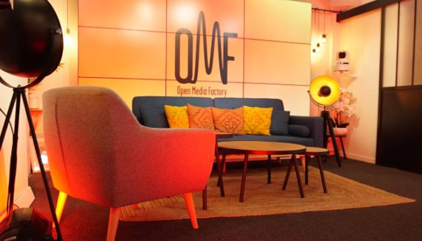

Le site web de la maison-mère de l'entreprise de mon alternance, qui devais mettre en avant les différents services de studios. Des trois sites que j'ai réalisé en tout pour mon alternance, celui là a été le premier de la liste et à demandé beaucoup de modifications pour obtenir un résultat qui leur convenait. Le site est désormais accessible sur l'adresse https://openmediafactory.com
